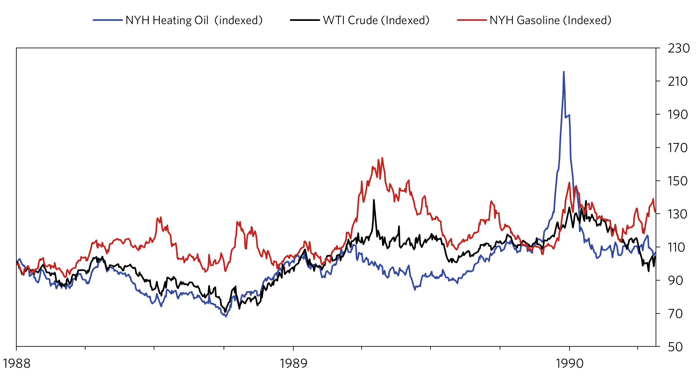
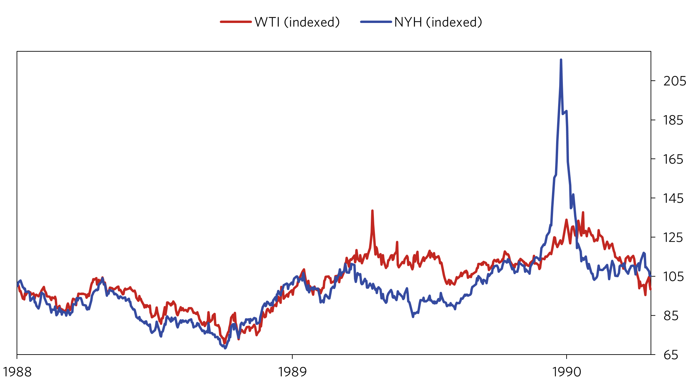
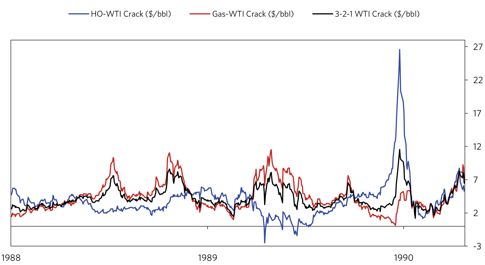
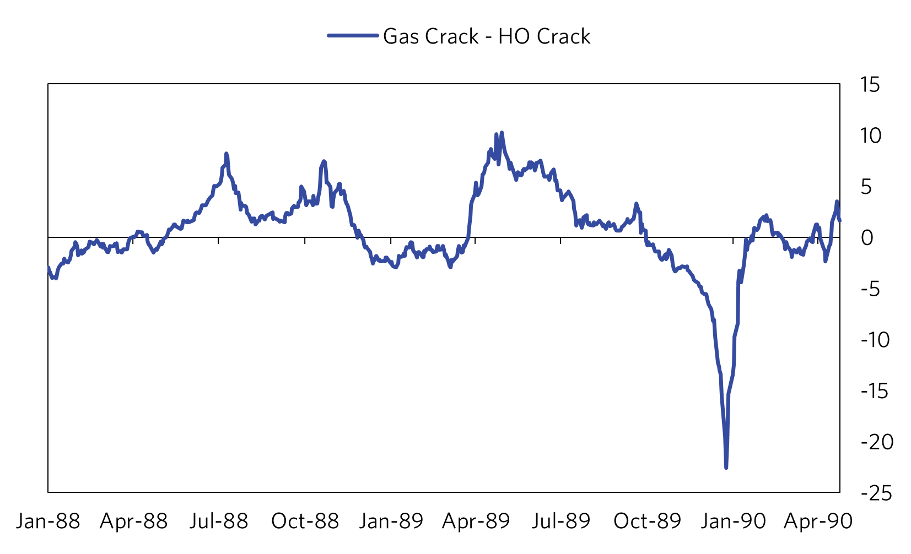
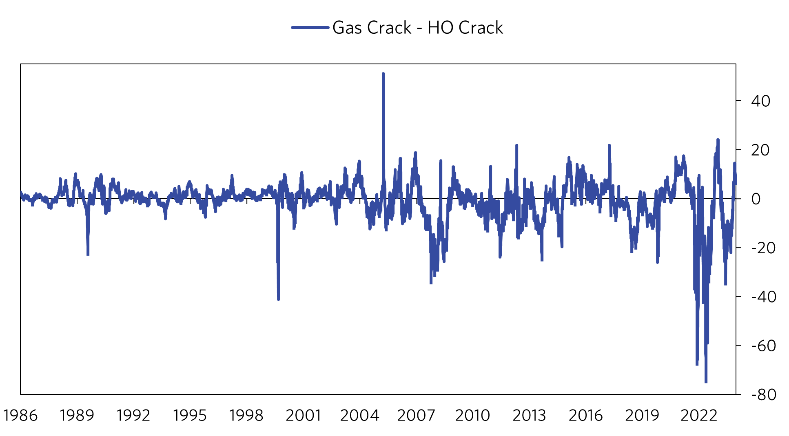
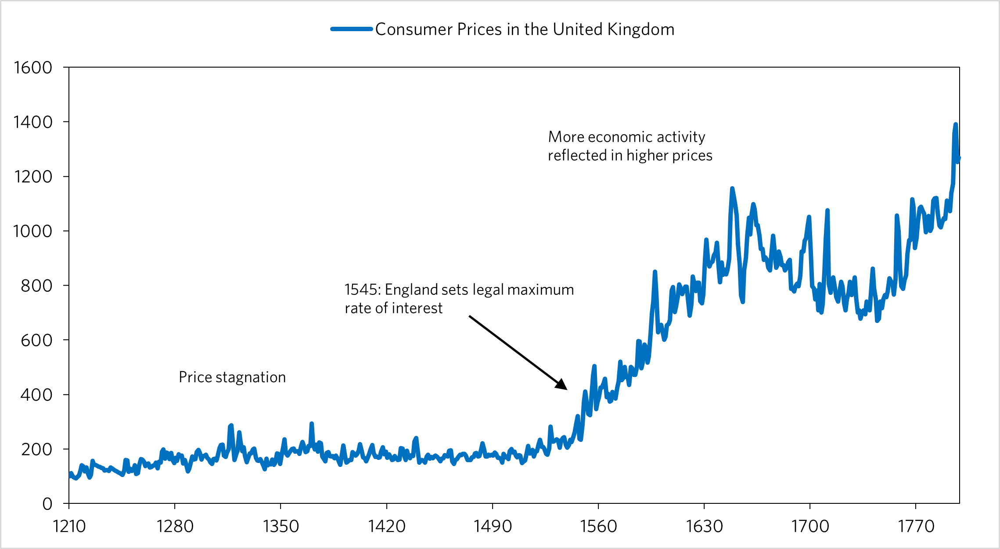

 Data Source: Federal Reserve Bank of St. Louis fred.stlouis.org
 Data Source: Federal Reserve Bank of St. Louis fred.stlouis.org
The most apparent thing seen in the first chart was the dramatic spike in heating oil prices in December 1989.
The month featured the coldest monthly temperatures since January 1982 in the Northeast. Whilst a demand shock
was a major factor in this development, the shock was exacerbated by decreases in supply that had been somewhat
offset by less demand prior. The origins of this supply change relate to the Exxon-Valdez oil spill which occurred
on March 24, 1989, along with the shutdown of the Brent system which occurred on April 18. The prices of WTI crude,
heating oil (HO) and gasoline had moved in lockstep until this event, whereupon the prices of HO and gasoline began
to diverge with gas going much higher and heating oil going lower. Aside from the fact that supply of crude had decreased,
one issue was that the spill was triggering panic buying of gasoline by wholesalers. This was seen in California, but the
tightness ‘spread around’ (As put by a trader in 1989) the nation as gasoline was being shipped to California to take
advantage of their higher prices. The other issue was that many refineries depended on Brent, which is light and yields
more gasoline than some of its heavier counterparts in the Middle East.
 Data Source: Federal Reserve Bank of St. Louis fred.stlouis.org
 Data Source: Federal Reserve Bank of St. Louis fred.stlouis.org
These refineries began to switch to higher cost alternatives, driving up crude derivative prices. On top of all this, the winter of 88-89’ had been warm, so the driving season was kicking off early. The combination of these factors pushed gasoline prices higher as HO prices naturally fell due to seasonally lower demand. Subsequently, the ‘crack’ spread (profitability of different crude products) on gas rose while the HO crack went negative. Therefore, refineries worked to get as much gasoline as possible out of crude oil (likely more than the standard max gasoline mode typical of summer refinery production).
 Data Source: Federal Reserve Bank of St. Louis fred.stlouis.org
Data Source: Federal Reserve Bank of St. Louis fred.stlouis.org
On top of refiners producing less, dealers were demanding less heating oil. Lastly, another factor contributing were the soviet coal strikes during the summer of 1989, which likely contributed to higher prices of HO (a substitute) in Europe and ultimately the US. As we can see, there was a decrease in supply that was hidden under the guise of decreased seasonal demand. While prices began to pick up in the fall of ’89, the market was still vulnerable to a demand shock.
As late November 1989 came around, Europe entered a deep freeze and began demanding more heating oil left and right. Tankers of oil destined for the East Coast stayed across the Atlantic, driving up prices in the US (especially as the cold hit America). While the Europe cold receded by mid-December, at around the same time the cold snap began to hit America (including the southern states such as Florida which had a white Christmas). Demand was ‘double’ what it usually was, according to John Lord of Mobil in a December 1989 editorial in the NY Times. Outside PADD-1 A/B, natural gas is the primary source of heat, while PADD 1 A/B mainly heating oil. Natural gas prices rose, but not to the same extent as heating oil prices. This is a testament to the supply constraints present in the heating oil market. The biggest takeaway from all this is that it is important to watch the incentives of refiners, especially through the lens of spreads between different product cracks. High or low spreads should be seen as a ‘red flag’, whereupon one should see whether a switchover towards more of a certain product could have a potential if demand were to suddenly shift.
 Data Source: Federal Reserve Bank of St. Louis fred.stlouis.org
1-15-2024 Usury and the Industrial Revolution Data Source: Federal Reserve Bank of St. Louis fred.stlouis.org
As you can see in the chart above up until roughly 1550, England suffered from stagnant prices, with Malthus' theory of population holding true. One factor in this turning around was the reversal of some usury laws in England in 1545, where they set a 'legal maximum rate' as opposed to the prohibition that was set forth in 1275, based on the church doctrine of the time. The allowance of lending/banking would ultimately would ultimately start picking up livings standards and innovation as consumer demand and access to capital increased. This increased capital access to innovators probably would lead to inventions such as the steam engine, etc. This would play into the industrial revolution and the transformation of the world to the way we know it now. It seems that we have to give a big thanks to the reversal of that law!
10-15-2023 Financial Crisis Correlation in Russia LinkSearch historical stock data to find a historical trend closest to the bubble during 2005-2007 in the Russian stock market. Will likely be expanded soon to include multiple countries as cross references(US, UK, RUS, etc.) to predict future stock prices given the magnitude of current trends. Using Python, I was able to scan through roughly 600 sections of past stock prices and utilize compare each to the period Jan-2005 - Dec 2007 utilizing euclidean distance. I programmed it to compare each of those sections to the current period and return whichever combination of the two were the three shortest euclidean distances, with surprising results. The program returned the period August 1866 through June 1869 as closest to the current period.

In Russian history, there was a recession in 1870-1871, as reflected in the chart which falls at the same time as the 2008-2009 recession happened. One important difference to note is the higher magnitude of change in 2005-2007 vs the historical period. This is clearly due to the the absence of high frequency traders and the small amount of people owning stocks in the 1800s. Therefore, comparing the two still has significance. If one had done this model in June 2007, with russian rates held steady at 6.5%, it would not have been an unambiguous decision to short the market. These two time periods, while correlated, still hold differences in inputs. However, one input that is not very different is human psychology, which hasn't changed a whole lot in the past 200 years, with people following the herd in almost everything they do now and then. While it would have been unambiguous that the market was getting high and that I dropdown was probably due within the next few years, the hardest thing to determine is exactly how high a bubble will go! In 2007, it would have been unambiguous that the bubble in the US was going to come to an end given that vast amount of unregulated securities being issued in the United States. However in Russia, crude prices were still strong in June 2007, meaning that it would have been unwise to immediately short the market following this indicator. It would have been useful to look at the extreme bubble in the United States, which had ripple effects on the crude prices which was a key driver in the russian recession of 2009. GDP in Russia went up in 2007/2008, and the market dipped (likely due to decreased expectations of future preformance, which came to light in 2009 with the collapse in oil prices) but held up. Therefore, it would have been wise to short the Russian stock market in late mid-late 2008; which you would have done unambiguously if one was able to accuratly project a drop in crude prices (which in hindsight seems easy, but in reality it would have been difficult but not impossible). Speaking more broadly, every bubble must come to an end, but the question is when. In any bubble, if one is able to see how high the bubble is relative to historical measures and mesaure how strong the inputs are that are driving these changes, one would have a good grasp on whether the bubble would get as big as or bigger than historical bubbles. Another inicator I will work on soon is one in which a long term trend line is extrapolated across the S&P 500, recording the highest and lowest std. deviations in the set while comparing that to the std. deviation of the present. A model like this combined with an analysis of the strength in inputs driving the ups and downs of the market would be helpful in projected future market movements, along with the model used above. Overall, while this tool is very valuable, one must also compare inputs driving the trends in order to verify there significance in any trade. See python code in link.
8-23-2023 Banking Industry LinkBrief comparative analysis of the banking industry
8-23-2023 Automotive Industry LinkComparative analysis of the major auto companies and a brief historical comparison.
8-23-2023 Union Pacific LinkCompares Union Pacific to its primary competitors and looks at their financial results during previous downturns to see if they can endure future downturns. I take a look at the financials of UNP itself and see if it is suitable for investment.
7-26-2023 Prudential Financial LinkThis is some research I did over the quarantine along with JP Morgan, Union Pacfic, Disney, and a variety of others. This research is not very relevant today as conditions have changed and everything would have to be analyzed again, but this just shows you the kind of research I do. Will post more of these and more recent research in the future.